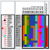
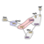
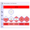
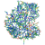
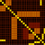

Highlights of the 1st IEEE Symposium on Biological Data Visualization
The BioVis 2011 Highlights contain significantly expanded versions of the best papers presented at the meeting, addressing important visualization and exploration challenges in the areas of sequence alignments, metabolomics, biochemical simulations and screens, networks, pedigrees and expression quantitative trait loci (eQTL). By making these highlights available in the open-access BMC Bioinformatics journal, we hope to foster the knowledge transfer between the bioinformatics, biology and visualization communities.
Contents
Highlights of the 1st IEEE Symposium on Biological Data Visualization
Jessie Kennedy and Jos Roerdink
iHAT: interactive Hierarchical Aggregation Table for Genetic Association Data
Julian Heinrich, Corinna Vehlow, Florian Battke, Günter Jäger, Daniel Weiskopf and Kay Nieselt
RuleBender: Integrated modeling, simulation and visualization for rule-based intracellular biochemistry
Adam M Smith, Wen Xu, Yao Sun, James R Faeder and G Elisabeta Marai
HiTSEE KNIME: A visualization tool for hit selection and analysis in high-throughput screening experiments for the KNIME platform
Hendrik Strobelt, Enrico Bertini, Joachim Braun, Oliver Deussen, Ulrich Groth, Thomas U Mayer and Dorit Merhof
VIPER: a visualisation tool for exploring inheritance inconsistencies in genotyped pedigrees
Trevor Paterson, Martin Graham, Jessie Kennedy and Andy Law
OmicsVis: An interactive tool for visually analyzing metabolomics data
Philip Livengood, Ross Maciejewski, Wei Chen and David S Ebert
NetMets: software for quantifying and visualizing errors in biological network segmentation
David Mayerich, Chris Bjornsson, Jonathan Taylor and Badrinath Roysam
An eQTL biological data visualization challenge and approaches from the visualization community
Christopher W Bartlett, Soo Y Cheong, Liping Hou, Jesse Paquette, Pek Y Lum, Günter Jäger, Florian Battke, Corinna Vehlow, Julian Heinrich, Kay Nieselt, Ryo Sakai, Jan Aerts and William C Ray
BioVis 2012 is sponsored by the IEEE VGTC. To contact the organizers please send an email to contact@biovis.net.
© 2012. BioVis. All Rights Reserved.